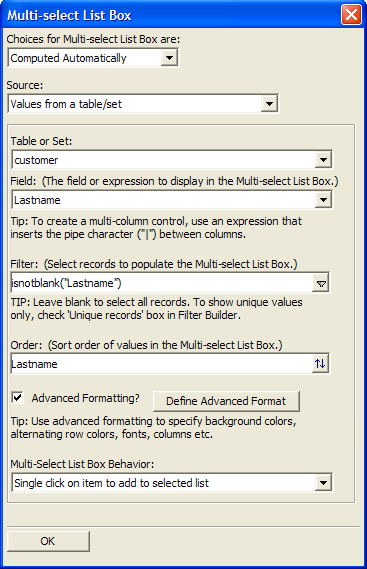
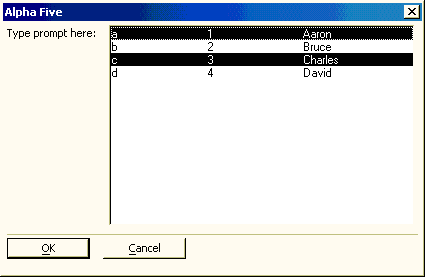

Multiple Selection List Style Xdialog
To create a property-sheet style Xdialog.
Create a new Action Script.
Select "Xdialog Windows" in the Category list.
Select "Display an XDialog Box" in the Action list.
Click OK to display the Script Genie.
Enter the name of new variable in the Variable Name field.
Optionally, change the value of the Prompt field.
Optionally, change the selection in the data Type list.
Set the Width and Height of the resulting dialog box.
Select "Multi-select List Box" in the Style list.
Click Define List Box to display the Multi-select List Box dialog.

Define Choices
Make a selection from Choices for Multi-select List Box. The options are:
- "User Defined"
- "Computed Automatically"
If you selected "User Defined" in step 11:
Enter a list of choices, one choice per line.
Use a pipe "|" character between items to create columns, as illustrated below.

Optionally, sort the entries by clicking
 or .
or .
If you selected "Computed Automatically" in step 11, make a choice from the Source list. The options are:
|
Choice |
Description |
|
"Values from a table/set" |
|
|
"Field List" |
Select the table or set that will provide the field list. |
|
"Expression (that returns a CR-LF delimited list)" |
Enter the expression into the Expression control. Optionally,
click |
|
"Browse layouts" "Form layouts" "Report layouts" "Label layouts" "Letter layouts" "Append Operations" "Copy Operations" "Export Operations" "Import Operations" "Join Operations" "Mark Operations" "Post Operations" "Query Operations" "Summary Operations" "Update Operations" "Xtab Operations" |
Select one or more tables or sets that will provide the list of layouts. |
|
"Tables" "Sets" "Menu Objects" "Toolbar Objects" "Scripts" "Functions" "Bitmaps" |
Returns objects from the current table. |
|
"Email Templates" |
Select the table or set that will provide the email template list. |
Optionally, select Advanced Formatting and click Define Advance Format to display the <span class=Screen>Advanced Formatting</span> dialog.
Make a choice from the Multi-Select List Box Behavior list. The options are:
"Single click on item to add to selected list"
"Standard Windows behavior (Shift or Ctrl Click to add to selected list"
Click OK to continue.
Optionally, click Preview Xdialog to see how the dialog will appear.
Finish the Dialog Definition
Click Next >.
Optionally, enter the title of the dialog box in the Dialog Title field.
Optionally, enter text to appear at the top of the dialog box into the Header Text field.
Optionally, enter text to appear at the bottom of the dialog box into the Footer Text field.
Optionally, modify the bottom labels in the Button Text fields.
Click Next >.
Optionally, modify the name of the variable in the Variable Name field that will capture the return value of the Xdialog box.
Optionally, change the Scope of the return variable to one the following values. A variable's scope refers to where the variable can be seen, i.e. which other scripts can access the variable.
"Shared". Variables are available throughout the current form.
"Global". Variables are available anywhere in Alpha Anywhere.
"Local". Variables are available only in the current script.
Click Next >.
Optionally, modify the comment that describes the action.
Click Finish.
Select an entry from the Table or Set list. The options are:
"
" - allows you to navigate to and select a table or set. "
" - only valid if run from a form. the tables and sets in the current database
Make a selection from the Field list. Select "
" if you want to create a multi-column list. Optionally, enter an expression into the Filter control that selects records from the selected table or set. Leave the field blank to select all records.
Optionally, enter an expression that sorts the entries into the Order control.
See Also